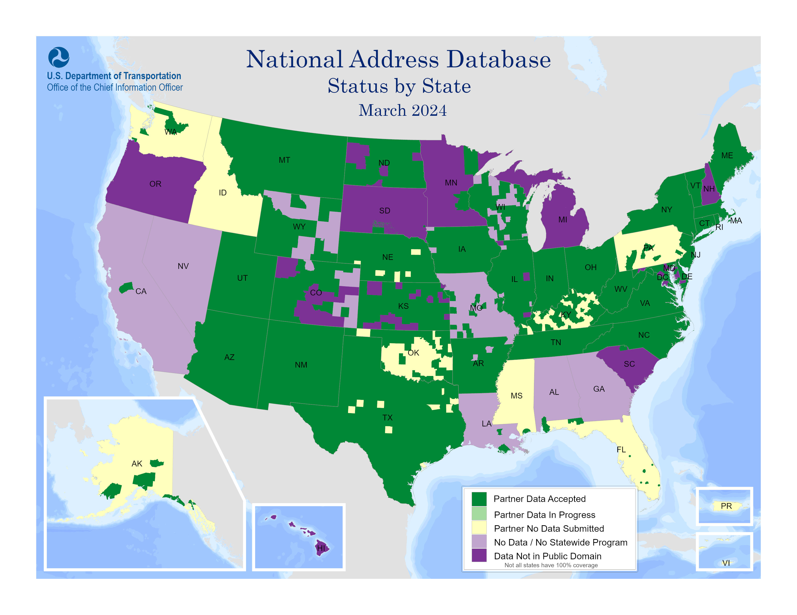
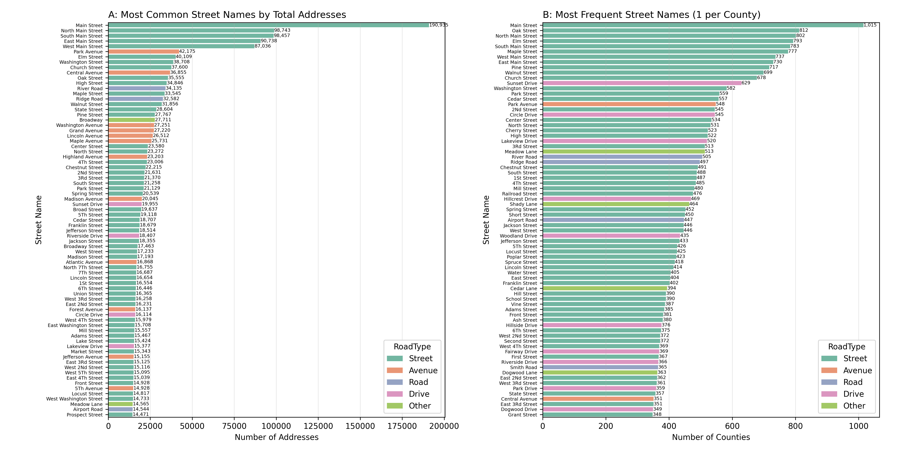
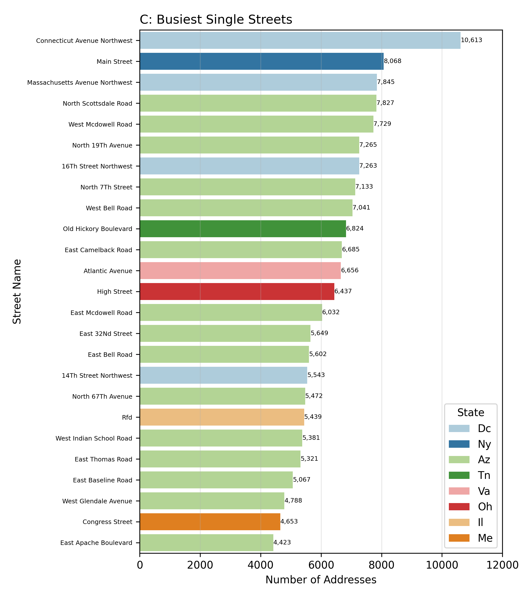
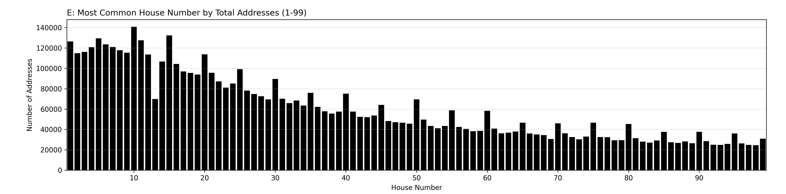
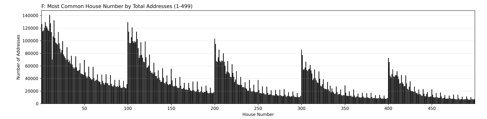

National Addresses
Background
The United States is one giant network of roads connecting residential and commercial properties. Millions of people every day drive from one location to another. A to B. Today very little thought goes in to the actual mapping of this route as A and B are searchable through network-connected applications with significant algorithmic backends capable of finding the fastest route from A to B in milliseconds. A and B no longer need to be easily searchable on a map or organized in an intuitive numbering system. Without these constraints, how have we organized the world around us through addresses? Are there patterns or hidden stories in the way we name where we live and work?

Data is compiled from the National Address Database which currently contains over 78 million entries across more than 36 states. Unfortunately, not all data in select regions is publicly tabulated or available. Please see the map produced by the USDOT which details
which counties have provided data for this dataset. I encourage you to read through the database site; however if you don't, I think they concisely summarize exactly why such a database is important to maintain:
"Accurate and up-to-date addresses are critical to transportation safety and are a vital part of Next Generation 9-1-1. They are also essential for a broad range of government services, including mail delivery, permitting, and school siting..."
Data Processing
The first hurdle we encounter is that the csv (comma separated values) database download of choice is a nearly 30 GB large. 30 GB of text is a monstrous amount of text. Loading and manipulating this amount of data without specialized processes or intentional system design will be very slow. Safe to say the original file will not be contained within
the project's regular GitHub repository.
Before plotting anything, we should remove excess data that is not informative to us. The dataset contains 60 columns of data for all 78,078,347 individual addresses. This includes some duplicate data like the "StNam_Full" column which contains all of the data from
eight additional columns. For instance, East 10th Street is listed as StNam_Full, but it has St_PreDir of "East", St_Name of "10th", and St_PosTyp of "Street".
After this processing is complete, the new filesize is only 6.1 GB. Still very large but a lot more manageable.
Another cleaning technique used was that any data entry with fewer than 60 segments of information was immediately excluded. This cut our number of entries from 78 million to 56 million.
Therefore, roughly 1/4 of the data provided may have been formatted incorrectly. Alternate dataset cleaning techniques could be used to attempt to map these rows to assumed columns, but given that the dataset already contains a subset of all overall addresses, excluding a few more
which were not properly formatted should not significantly change trends.
Street Names
In the 56 million or so addresses in the dataset, they are described by 1,133,644 unqiue street names. We can look at the most common street names by total addresses (Figure A) as well as the most common street names by number of distinct counties to have a street with this name (Figure B). There are 1592 counties in this list for reference - so Main Street is present in almost 2/3 of all counties in the NAD. Some other quick descriptive facts about street names in this database:
* County-roads are defined as such where one road can only exist in one county. E.g, if elm street passes between two counties, it is counted once as elm street in county A and once in county B. 
Looking through these two figures, a number of trends stand out to me. For one, most of the names can be categorized into just a few categories - see below for these categories (only Figure A included). Streets (S) and Avenues (A) are abbreviated in the following. (S/A) indicates both street and avenue versions are present in the top indices.
- Main S
- Central Avenue
- Center S
- North S
- (1, 2, 3, 4, 5, 6, 7) S
- South S
- West S
- North 7th S
- West (2, 3, 4, 5) S
- East (2, 3, 4) S
- 5th A
- (E/W/NA) Washington S/A
- Lincoln S/A
- Madison S/A
- Franklin S
- Jefferson S/A
- Jackson S
- Adams S
- Elm S
- Oak S
- Maple S/A
- Walnut S
- Pine S
- Chestnut S
- Cedar S
- Forest A
- Park S/A
- River Road
- Ridge Road
- Riverside Drive
- Atlantic A
- Lake S
- Lakeview Drive
- Meadow Lane
- Airport Road
- Church S
- Mill S
- Market S
- High S
- Broadway
- State S
- Grand A
- Highland S
- Spring S
- Sunset Drive
- Broad S
- Broadway S
- Union S
- Circle Drive
- Front S
- Locust S
- Prospect S
Unsurprisingly, the most common name for both metric is Main Street. For total number of addresses, there are nearly 400,000 addresses in the NAD listed on some variant of Main Street. Intuitively, main streets are common thoroughfares with residential and business buildings that are often multi-unit and stretch across wide urban areas. Some other standouts are just how many presidents and trees are represented in our naming system. Furthermore, Streets are far more common in both top 75 lists than Roads, Avenues, Drives, and other combined.
Comparing the two subplots, the first thing that stands out is the relative re-ordering of some of the "big" names. For instance, almost all of the traditionally urban Avenues are no longer present in Figure B. Instead there are 6 more Drives and 3 more Roads and other. We also have a number of Streets that rose through the rankings and were not present on the first subplot but are now exceptionally common accross counties: Cherry Street (21st), Railroad Street (33), Hillcrest Drive (34), and more. The biggest human geography difference between these two subplots is that the first generally prioritizes urban routes lined with multi-unit buildings whereas the second is population agnostic and has greater proportional representation from rural counties. In these counties, geographic and arboreal naming schemes appear to be more prevalent than some of the traditionally urban names which might be historical or ordinal.
 Let's now take a look at the most populous single streets in this database. To make this distinction, we will sum every address per single road in each county. The results are shown in Figure C . Some of these results are relatively surprising to me. I would have assumed the figure would be dominated by Manhatten streets as the tall buildings would contain a large number of addresses. However, it appears as though no Manhattan streets are on the top 25 (The NY Main street is a very long thoroughfare in Buffalo, not NYC). Instead of being NY-dominated, this is a good representation of some of the longest continuous roads in major urban centers.
Places 1, 3, 7, and 17 are streets that cut through almost the entirety of Washington DC and are lined by large multi-unit buildings. 14/25 are located in Maricopa County, AZ (Phoenix Metro Area). Phoenix is notorious for its grid layout and these major roads run uninterrupted through an area home to over 5 million residents. High Street in OH is the principal road of Columbus, as is Congress Street in Portland Maine. Atlantic Avenue in Virginia Beach is 3 miles of condominiums, and Old Hickory Avenue encircles Nashville TN. It even has its own Wikipedia page. Rfd in Lake County, IL is a little bit of a mystery to me. It could be a transcription or data entry error, or it could be actual addresses designated as a byproduct of an old USPS service: Rural Free Delivery.
 Another fun gimmick we can look at is the length of street names - mainly the longest ones. The first thing I discovered is that Ohio has a tendency to be obnoxious... After a little additional processing to remove Interstates, Highways, and "United States Routes", Figure D is the result.
Had we kept some of these keywords, the figure would be dominated by Ohio's circumlocutory interstates and underpasses like "Interstate 270 South And United States Route 33 Underpass". In fact, out of the 250 "true" longest street names in the dataset, 187 are in Franklin County, OH, and 211 are in OH (~85%).
Another fun gimmick we can look at is the length of street names - mainly the longest ones. The first thing I discovered is that Ohio has a tendency to be obnoxious... After a little additional processing to remove Interstates, Highways, and "United States Routes", Figure D is the result.
Had we kept some of these keywords, the figure would be dominated by Ohio's circumlocutory interstates and underpasses like "Interstate 270 South And United States Route 33 Underpass". In fact, out of the 250 "true" longest street names in the dataset, 187 are in Franklin County, OH, and 211 are in OH (~85%).
My personal favorite is East Morgan Ave - East Of Taco Bell Avenue.
Street Suffixes
One curiosity gained while looking at the most common street names in this data set is the decision regarding street suffix, e.g., Street, Road, Lane, Boulevard, etc. Why is Dogwood Lane more common than Dogwood Drive which is more common than Dogwood Street or Avenue? How are these decided? For many I'm not sure if we will ever have a definitive answer. However, I have some couple plausible theories. I speculate that certain road names become more common and that contributes to a snowball effect where a name sounds better in the way it has been written before rather than deviate and create something new. Alternatively, the same underlying subconcious around naming might be consistent across time and geography contributing to independent "namers" converging on the same name. For example: River Road feels more natural than River Street or River Boulevard. There are pieces online that give more historical and utilitarian meaning for each suffix: Steamboat Agent & Visual Guide to Roads. Summarizing, these sources describe our target suffixes as:
Based on the resources, it seems that different regions may have different suffix prevalencies depending on original or current land usage. The following plot shows the 8 most common suffixes (by counties containing at least 1 road with that suffix) across the NAD geographic region. Please use the button in the top left to select between suffix and scroll or move around as needed. Heatmap data represents the decimal proportion of roads within that county which use that suffix. For example, St Louis County, MN (very North) has 4901 registered roads in the database, roughly 40% of them are terminated by "Road". If that value were > 50% it would stay the same shade of blue for all values. Some counties are either very red or very blue - often because they only have 1 registered road in this database and that road either matches (1) the selected suffix or doesn't (0).
Let's look through each of these to see how they match up with the previously written descriptions.
Overall, most of these suffix descriptions seemed to match their geographic distributions besides the abundance of streets and avenues in some of the farming states like ND and IA. Undefined are all the unlisted, undocumented, or not present suffixes. For isntace, Broadway has no suffix. Included in the Github repository is a separated dataframe containing this data without all 55 million rows if you want to look through it yourself. Every row represents one suffix-county pairing and the count column indicates the number of routes in this county which contain this suffix. 274 suffixes are listed - I encourage you to look for patterns in the ~266 not mentioned. Some notable observations from skimming through the csv:
Numbering
Street names are only one portion of our overall address, let's now look at the 110,737 unique house numbers. Are there any trends you might be able to predict before looking at figures?
In Figure E we can see the occurence of house numbers 1-99. Looking at this data a few observations stand out:
Let's extend this data through 499 and see if the trends continue. 
Yep. The trend does continue for the most part with the obvious addition that with every 100 numbers the frequency jumps up again. Why might this happen? Are communities starting house numbers at 300 and counting up or incrementing by 5? Hard to be certain from the data alone, but one hypothesis is that just as communities prefer to number in multiples of 5 and 10, they are even more preferential toward multiples of 100. This would mean there are a lot of extra zeros on envelopes shipped around the US. Let me know if you have other theories about why these patterns exist in our addresses.